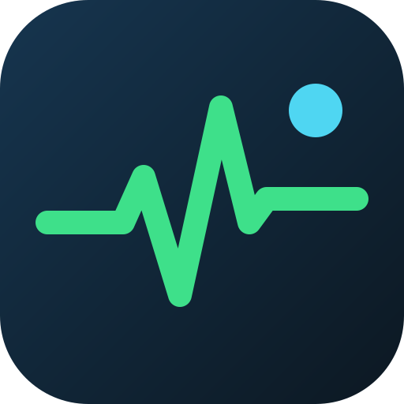

VITAL ASSESS
バイタルアセス
わかっている数値と波形から、すぐに考える
最近の評価記録
診療の参考と学習のためのツールで、医療機器ではありません。診断・治療の判断は利用者が行ってください。記録はこの端末の中だけに保存され、氏名・患者IDは入力しない設計です。利用規約・免責事項

わかっている数値と波形から、すぐに考える
モニター画面・電子カルテ・紙の記録にカメラを向けて撮影すると、HR・血圧・SpO2・RR・体温を読み取ります。読み取った値は確認してから入力欄に入ります。患者の氏名・IDが写らないように撮影してください。
記録紙・モニター画面を正面から、方眼と波形が画面いっぱいに入るように撮影してください。反射と影を避けると計測しやすくなります。画像は保存しません。「所見を読み取る」を押したときだけ、読み取りのためにClaudeへ送ります。
わかる項目だけで判定します。入力するたびに結果が更新されます。
25mm/秒・10mm/mV の練習用の合成波形です（33種類からランダム）。小さいマス1mm＝0.04秒。横にスクロールできます。
制定日:2026年10月19日